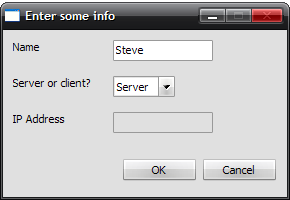

The server is the side of the Whiteboard program the TA runs. Once the server is set up, other clients may connect to it with the proper IP address.
After the program is run, the prompt dialog is displayed. This is approximately what it should look like once the options are set correctly:

The name entered may be different.
Once the info is entered, and the OK button is pressed, the program is started. The IP address is displayed in the status window, and the server starts listening for new connections. There are some restrictions to connections, however. First off, the server may only support no more than 64 simultaneous connections at once. Second, only the server's local IP may be used. NAT and port forwarding are not supported.
Once the server is set up, the lecture begins. Users may connect and disconnect at will, and the server's chat box works just like everyone else's. However, the server has two distinct abilities separate from the client.
The server is the only user with access to the whiteboard, similar to an actual classroom where the the teacher is the only one in front of the class drawing on the whiteboard. Clients will see what the server sees, but will not be able to change it.
The server also has access to the admin commands. There are three commands in this field:
/kick [name]: Given the name of a connected client, the client is forced to disconnect from the server. An appropriate message is displayed in the status window.
/ban [name]: Bans the given client from the current session. Even though a name is given, the client's IP is banned from connecting again. Once banned, the client's name and IP are displayed in the status window.
/unban [IP]: Unbans the given IP from the session.